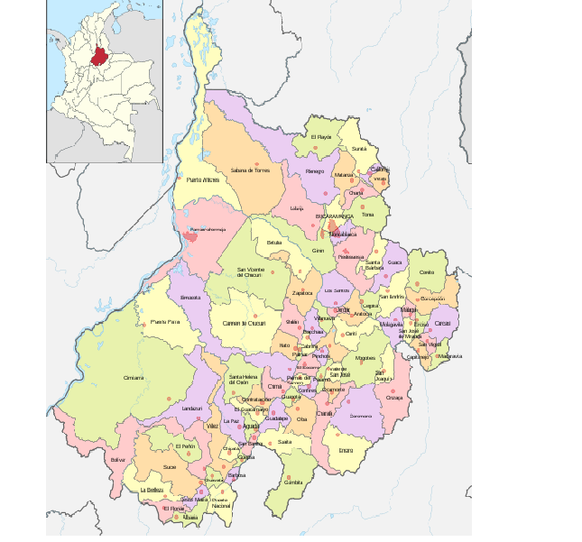

Recomendaciones
Antes de realizar cualquier ruta tenga encuenta las siguientes recomendaciones:
CicliSan
Encontraras diferentes rutas ciclísticas en la cual podrás practicar, encontraras mucha diversidad ya sea el tipo de bicicleta, tu categoría (edad), clasificación (dificultad) y demás elementos.
Encontraras la opción de registrarte, esto te servirá si quieres agregar nuevas rutas, además una tienda virtual ciclistica y un apartado de noticias de este mundo